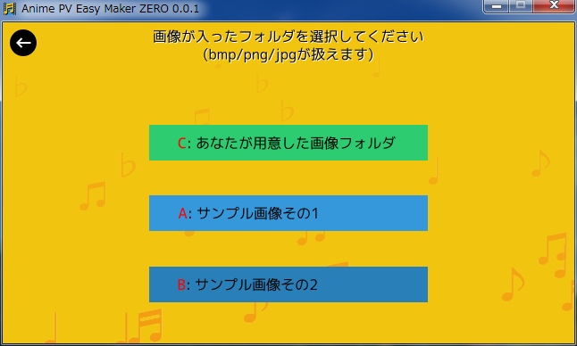

タイトル画面です。起動するとこの画面になります。
「はじめる」ボタンを押してみましょう。次の画面に進むはずです。
- 各ボタンの赤い文字は、ショートカットキーです。
- 例えばこの画面では、「Cキー」を押しても次の画面に進みます。
- ESCキーを押すとソフトを終了できます。
- もちろん、ウインドウ右上の閉じるボタンでも、終了できます。
- 右下のボタンを押せば、設定画面に進みます。

ソフトの説明画面に切り替わりました。
「つぎにすすむ」ボタンを押してみましょう。
- 左上にある黒い丸ボタンは「戻る」ボタンです。
- 押すと前の画面に戻ります。
- 「Backspaceキー」でも戻ることができます。

曲を選択しましょう。
お好みの wav/mp3/ogg ファイルが扱えますが、とりあえず、最初はサンプル曲を選んでみましょう。
- サンプル曲その1は、30秒の曲。
- サンプル曲その2は、1分30秒の曲。(アニメのOP/EDはえてして1分30秒。)

画像が入ったフォルダを指定しましょう。
bmp/jpg/pngファイルが扱えます。とりあえず、最初はサンプル画像を選んでみましょう。
- サンプル画像その1は、実写風画像。
- サンプル画像その2は、アニメ風画像。
曲と画像の選択が済むと、メニュー画面になります。
「記録開始」を押してみましょう。
- 一番下には、曲、画像、記録ファイル(ログ)の場所が表示されてます。
- 場所がおかしかったら、前の画面に戻って選択し直しましょう。

記録開始画面になりました。
(念のために)「ログ消去」を押して記録を初期化してから、「はじめる」ボタンを押してみましょう。記録が始まります。
- 「はじめる」ボタンを押せば、記録を開始できます。
- 「Help」ボタンを押せば、操作画面の説明が表示されます。
- 下の4つのボタンで、記録ファイルに対して処理ができます。
- ログ読み込み : 記録ファイルを読み込み直します。
- ログ保存 : 現在保持している記録をファイルに書き込みます。
- ログ編集/閲覧 : 記録ファイルをメモ帳で開きます。閲覧はもちろん、編集・保存後に「ログ読み込み」を選べば修正内容が反映されます。
- ログ消去 : 記録を初期化できます。
カウントダウンが始まって…

記録画面になりました。曲が流れ始めるはずです。
- キーボードを押せば絵が変わります。曲に合わせて押してください。
- Backspaceキーで中断できます。(※ 記録はファイル保存されません。)
- Deleteキーを押してる間、記録を消去できます。
曲が終わると、記録がファイル保存されて、前の画面に戻ります。
曲が終わって、記録開始画面に戻ってきました。
「戻る」ボタンを押してみましょう。
- ここで再度「はじめる」ボタンを押せば、記録を何度も追加・上書きすることができます。
メニュー画面に戻ってきました。
「書き出し」ボタンを押してみましょう。

書き出し画面です。
どちらかを選ぶことができます。
ただ、連番画像の書き出しは、
- 実時間の数倍時間がかかる。
- 書き出し中は他のウインドウを重ねることができない。
といった不便さがあるので、exoファイルを書き出して、AviUtl で動画に変換することをオススメします。
書き出しが終わったら作業終了です。ウインドウを閉じてしまって構いません。お疲れ様でした。
書き出した結果を動画に変換する手順は、次のような流れになります。
- AviUtl を起動して、拡張編集ウインドウを表示。
- 拡張編集ウインドウは、「設定」→「拡張編集の設定」を選ぶと開きます。
- 拡張編集ウインドウの上で右クリックしてメニューを表示。
- 「オブジェクトファイルから新規作成」を選んで、exoファイルを開く。
- 拡張編集ウインドウ上の「音声ファイル」(赤い部分)に、まだ何も割り当てられていないので、wav/mp3等を割り当てます。
- 赤い部分をダブルクリックすると、設定ダイアログが開きます。
- 「参照ファイル」ボタンを押して、wav/mp3等を選択します。
- 必要であれば、各カットの長さやタイミング、アニメの仕方を調整します。
- 動画を出力します。
- 「ファイル」 → 「AVI出力」で動画にできます。
連番画像を読み込んで動画にできるソフトならなんでもOKですが、FFmpeg.exe があればバッチファイルを実行するだけで動画に変換できます。img2avi.bat を実行して、「avi」か「mp4」を入力すればOKです。
FFmpeg の入手方法は、faq.html を参照してください。
記録開始画面で「Help」を押すと、この説明画面になります。
タイトル画面で右下のボタンを押すと、この設定画面になります。
設定変更後は、プログラムの再起動が必要です。
とにかくキーを押してみれば、なんとなく動きが分かるでしょうから、説明の必要はなさそうですが…。一応説明しておきます。
- FIX : 固定表示です。絵を動かさずに表示し続けます。
- F.I : フェードイン。真っ暗な状態から、絵が少しずつ見えてきます。
- F.O : フェードアウト。絵が暗くなっていきます。
- W.I : ホワイトフェードイン。真っ白な状態から、絵が少しずつ見えてきます。
- W.O : ホワイトフェードアウト。絵が白くなっていきます。
- T.U : トラックアップ。絵がゆっくり大きくなります。
- T.B : トラックバック。絵がゆっくり小さくなります。
- T.U2 : 急なトラックアップ。急激に絵が大きくなります。
- T.B2 : 急なトラックバック。急激に絵が小さくなります。
- PAN U : PANアップ。絵の上のほうが見えてきます。(下スクロール)
- PAN D : PANダウン。絵の下のほうが見えてきます。(上スクロール)
- PAN R : PANライト。絵の右のほうが見えてきます。(左スクロール)
- PAN L : PANレフト。絵の左のほうが見えてきます。(右スクロール)
キー割り当てが気に入らない場合は、animekind.csv を書き換えてみてください。